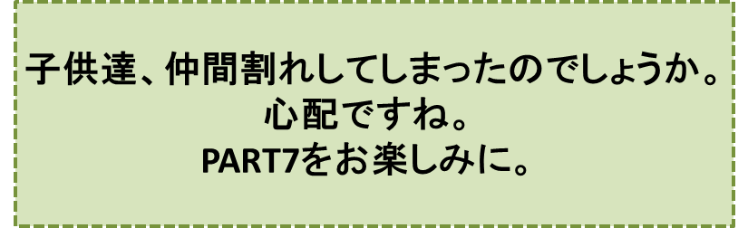

リンゴの木の神様とその弟子達-PART6-
『再会』の巻
笠原正雄
章介の祈りが、神様に通じたのでしょうか。
「あれまあ、どこの子だね。こんな所に！」
突然意外に近い所から、足音の主がひょいと顔をのぞかせました。
毛の赤ずきんを被ったおばあさんでした。鼻が、天狗さま程ではないけれど、随分長くその目は窪んでいて、日本人に違いないのですがなんだか西洋人のような感じのおばあさんです。
とても、奇妙な格好のおばあさんでしたけれど、章介にとってどれほど有難かったことでしょう。彼は今までとは打って変わった元気さで、弾かれたように
“ぎしっ”“ぎしっ”“ぎしっ”
“どん”“どん”“どん”
と凄い音を立てて階段を駆け上ります。
「あぁ、そんなに大きな音を立てないで下さいな！ 階段が壊れてしまいますよ」
おばあさんの優しさがたっぷりこもった声に章介は
“すみません”
というように何度もぴょこんと頭を下げました。
「いいよ。いいよ。そんなに頭を下げなくても。章介さんとおっしゃるんでしょ。私は何もかも分かっていますよ」
おばあさんはこう言った後満面の笑みを浮かべて章介を手招きします。
「私は、お外で待っていらっしゃるあなたを迎えに下りてきたのですよ。でもこんな所でお会いするなんてねえ……。
さぁ、さぁ、私についていらっしゃい。イサムさんの所に連れて行ってあげますから。さぁ、早く。早く。章介さんの三人のお友達の皆さんも、ご一緒ですよ」
……しかし、西洋人のようなおばあさんが案内してくれた大きな部屋のドアの側、入り口で章介は、にこりともせず、立ちつくしたままとなりました。
“決して油断しまいぞ”
と思ったからでしょう。
しかしそんな章介の心配はご無用でした。
部屋の中では素晴らしい歓迎が待っていたのです。
明、オサム、雄二の三人がソファーに深々と腰を掛け、愉快でたまらないというように身体を揺さぶりながら
“おいで！ 早く入っておいで。 とっても楽しいよ”
と手を叩きながら、声をそろえて章介に呼びかけます。
おばあさんが、イサムと呼んだ少年、先程リンゴ並木に突然現れたあの少年がハーモニカで『オールド・ブラック・ジョー』、『ケンタッキーの我が家』などのフォスターの名曲を賑やかに吹き鳴らしています
。
こんな歓迎ムード一色の部屋でしたけれど、章介は依然としてドアの側に立ちつくしたままでした。どうしてでしょう。
ゆったりとした広い部屋の中には、さまざまな家具が整然としかも見事な調和を保って置いてありました。
窓の側に大きなベッドがあって、真っ白なソファーが二つベッドを取り囲むように並んでいます。大きな暖炉から少し離れた所に置いてある真新しいヒノキ作りの机の上に、青磁色の花瓶があって真っ赤な花を咲かせています。ベッドの上から手が届くぐらいの所に銀色に輝く棚が作ってあります。
その棚の上にこそ、ドアの側で立ち尽くす章介が一心に見つめている“物”が置いてあったのです。
それは、赤色、青色、黄色のリンゴ達でした。
章介は、最初、
“わあっ、リンゴ並木のボク達のリンゴだ！ とうとうボク達がリンゴ泥棒を捕まえたんだ！”
と心の中で叫びました。
しかし、よーく見ると棚の上のリンゴ達は、並木のリンゴ達よりも一回りも二回りも大きく、それぞれの色が眩（まぶ）しい程に輝いていました。
猜疑（さいぎ）心いっぱいで眺めていた章介は、やがて憧れと感嘆の眼差しでリンゴ達を眺め始めます。
章介の口元は自然にほころび、その頬（ほお）は感激で真っ赤に燃えます。
「章介くん、ソファーに掛け給え」
おばあさんが先程イサムと呼んだ少年、立札作業に忙しいリンゴ並木に突然現れたあの不思議な少年、の声に、章介は、ぴょこんと頭を下げて三人が座っているソファーに腰を下ろしました。
明るい真昼のお日様が、大きな窓から優しい光を部屋いっぱいに投げかけ、子供達の顔は一層明るく輝き、その口からは笑い声が羽が生えたかのように飛び出してきます。
章介は、目の前のベッドの上に座っているイサムがとてもすばらしい仲間であるように思い始めました。
今朝のリンゴ並木での出来事が、章介の脳裏に回帰（かいき）します。
“君は、ボク達があんなに沢山いたのに大胆そのものだった。何の迷いもなく一番大きく立派なリンゴをもぎ取って食べたよね。大胆そのものだった。全く勇気の“塊（かたまり）”みたいなものさ。
それにリンゴを食べている姿には、“恐れ”など、かけらすら無かったよ。
いや、恐れないどころか、青空のように明るく笑いながら食べていたっけ……”
「ねぇ、君達、君達の後ろに掛けてある絵を見てくれますか。とてもすばらしい絵なんですよ」
イサムの声に子供達は、一斉に後ろを振り返りました。
全く見事な絵です！子供達の胸に、感動が溢れました。彼等は、声をそろえて叫びます。
“わぁーい、神様がリンゴを沢山に持っていらっしゃる。ほらっ！真白なかごの中に赤リンゴ、青リンゴ、黄リンゴが一杯入っている”
子供達は肩を寄せ合い、ソファーが壊れそうになるほど揺さぶりながら手を叩きます。
ちょうどその時でした。ドアがゆっくり開いて、あの赤ズキンのおばあさんが入って来ました。
「おぉ、おぉ、悪いおばあちゃまだね！ 大事なお客様を放っておいて。ごめんなさいね……」
赤ズキンのおばあさんは目をくるくるさせながら続けます。
「おや、おや、熱心に絵をご覧だね。その絵、何の絵か、ご存知かね？ えっ、ご存知ないって？
いいかい？ この絵はね、『リンゴの木の神様の絵』なんですよ。なんでもとても有名な画家が、お描きになった絵ということですよ」
章介はくすっと笑いました。
“どうしてリンゴの木の神様なんだろう。神様がかごの中にリンゴを沢山持っていらっしゃるだけなのに、どうして「リンゴの木の神様」なんだろう。多分、神様だってご存じないよ”
と思ったからでした。
おばあさんは、絵のことには構ってられないというように、せかせかと動きまわりイサムに声をかけました。
「イサムさん。リンゴを取って下さいな。皆さんにリンゴジュースを差し上げますから。神様がお作りになった素晴らしいジュースを、飲んでいただきますからね」
おばあさんは、リンゴを大切にかかえて部屋の奥にある洗面台に向かいます。
数分後、リンゴジュースがワイングラスにたっぷり注（つ）がれて、全員の手に行きわたりました。あくまでも透明、水晶のように輝くジュースが、甘酸っぱい香りを部屋一杯に漂わせます。
大人達がよくやるように、グラスを高く掲げ大きな声で、
「乾杯！ リンゴ並木、乾杯！！」
と声を合わせ、グラスを“カッチン”、“カッチン”と鳴らして祝福します。
明が、満面の笑みを浮かべて章介にささやきます。
「このジュースは、リンゴの木の神様の弟子になるためのリンゴジュースさ！」
彼は、こう言ってぐっと一気に飲みほしました。
章介は、この言葉に口もとまで持っていったグラスを、ぴたっと止めました。
雄二が、横から口を挟みます。
「そうだよ！ 明の言う通りさ。ボクは、もうリンゴの木の神様の弟子になった。何だか、とても楽しくなってきたなぁ」
このやり取りを聞いていたイサムが、少し首をかしげながら不思議で仕方がないな、というように章介に向って口を開きます。
「あれっ、君、まだ飲んでないの？ どうして？ とっても美味しいジュースなんだよ」
章介はこのイサムの言葉に
「ボクは飲まないよ。絶対に！」
と宣言してから、グラスになみなみと注がれていたジュースを全く口にしないまま、床の上に置きました。
章介ははっきりと明言します。
「ボクは、リンゴの木の神様の弟子には絶対にならないよ！」
胸を大きく広げてきっぱり宣言します。
章介は自分は信念を決して曲げることがない正義の味方、英雄なんだと確信し、身体一杯に受けきれないほどの誇りを感じました。
しかしこのため、章介の横に座って間近で章介の顔を見つめている明が、章介のズボンのポケットの膨らみ、こぶし大の石ころで一杯になったポケットの膨らみを、不思議そうにチラチラ眺めていることに全く気がつきませんでした。
章介は、それどころではありません。
時間の経過とともになんだか“気まずさ”が一杯に漂い始めた部屋から、如何にして外に逃れ出ることができるか、このことで、頭の中は“大忙し”という状況でした。
このためだったでしょう。明の手がそっとポケットの膨らみに近づき、その中に、こっそり忍び込んだことにも全く気が付きませんでした。
明の手に気付いて、慌ててポケットを押えましたけれど、時すでに遅し！ ポケットに隠し持っていいたコブシ大の“武器”が取り出されてしまいました。
「わぁい、すばらしいものをもってきたなぁ」
明は、石を高く掲げてさも愉快そうに笑いました。
部屋中がどっと沸きます。明は得意気に頬（ほお）を膨らませながら続けます。
「道理で、一人でやってこれたわけだ！」
明のこの言葉に部屋中はまたもどっと沸きます。
三人の仲間達はお腹をかかえるようにして笑います。
章介は憤然として席を立ちました。
「ちぇっ、よくも人を馬鹿にしたな！ 覚えてろ！ きっとこの仕返しはしてやる！」
章介の顔はもう真っ赤です。
「ボクは、必ずこの手で泥棒を捕まえてみせる！ 石を持ってきたのもその泥棒を捕まえようと思ったからなんだ。素手で立ち向うなんて馬鹿のやることだ！ 今日かかされた恥は、忘れないぞ。絶対忘れるものか！」
章介は、射るような鋭い目つきで、三人の仲間達そしてイサムを睨（にら）みつけると、振り返りもしないで、部屋の外に飛び出しました。
♪♪♪♪コーヒーブレイク♪♪♪♪
